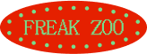
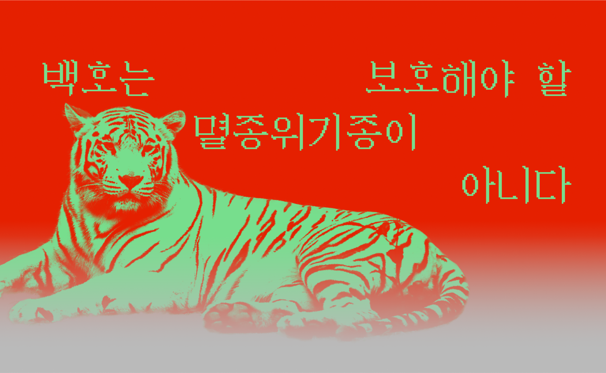
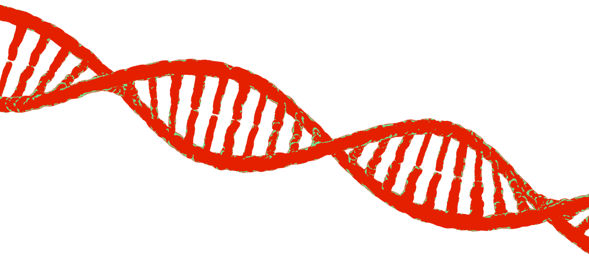
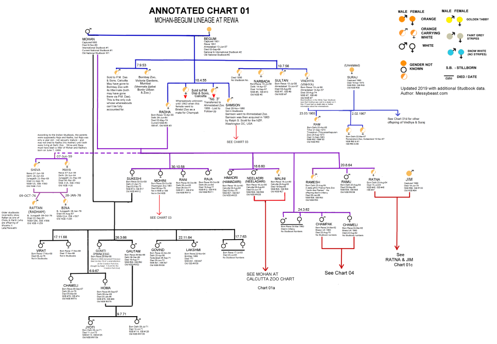
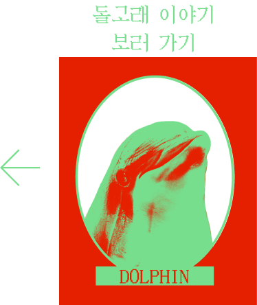
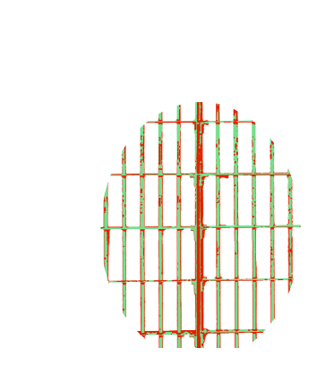
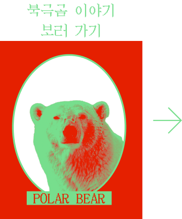
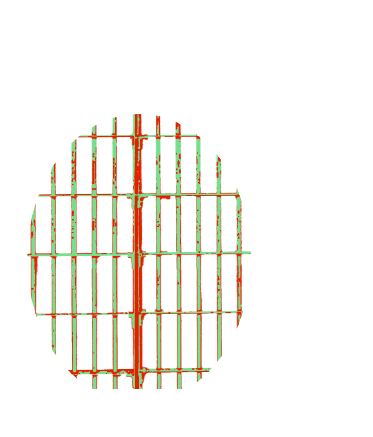

DOLPHIN
WHITE TIGER
POLAR BEAR

흔히들 백호를 보호해야 할 멸종위기종으로 생각한다.
그러나 이는 거짓이다.


백호 가계도 중 일부. 클릭하면 더 자세한 정보를 확인할 수 있다.
백호는 1958년 인도에서 포획된 것을 마지막으로 야생에서 사라졌다.
그럼에도 동물원 측이 1951년에 잡힌 '모한'이라는 백호를 지속적으로
근친교배 시켰기 때문에, 우리는 아직까지도 동물원에서 백호를 볼 수 있다.
자연적으로는 이미 사라졌으며 멸종위기종도 아닌 백호를
'근친교배'라는 방식을 사용하면서까지 번식시키는 이유는
동물원 관람객들에게 백호의 인기가 상당하기 때문이다.
그러나 근친교배를 통해 우리가 아는
정상적인 모습의 백호가 태어날 확률은
고작 3.3% 정도이다.
96.7%의 백호는 유전병을 갖고 세상에 태어난다.
대부분의 백호들은 반복되어온 근친교배로 인해
부정교합
면역결핍
척추측만
구개파열
정신장애
등의 선천적 유전병을 앓게 된다.
정상적으로 태어나지 못한 백호들은 병으로 인해 일찍 숨을 거두고,
그렇지 않더라도 암암리에 불법으로 유통되거나 도살된다.
백호는 오로지 사람들의
눈요깃거리가 되기 위해 태어난다.
 
 